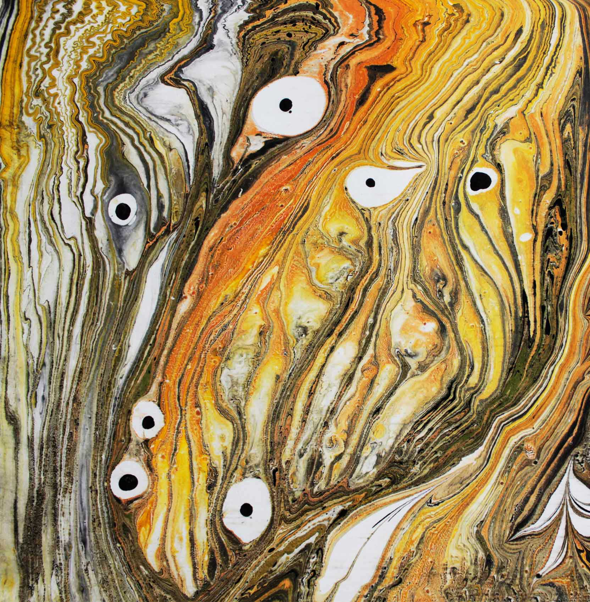
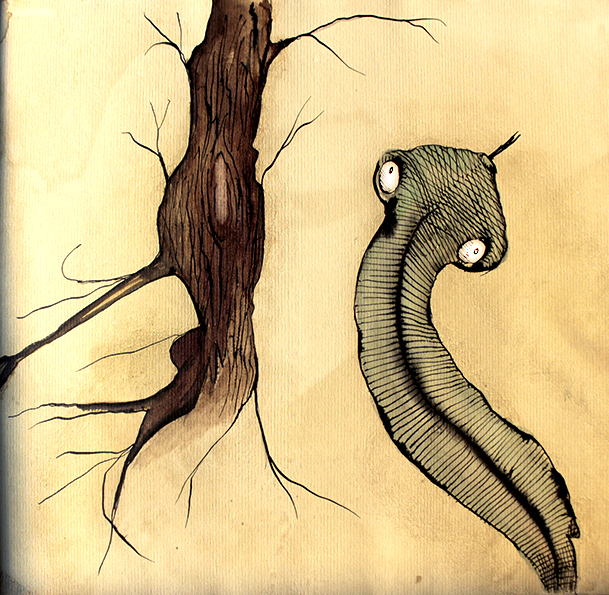
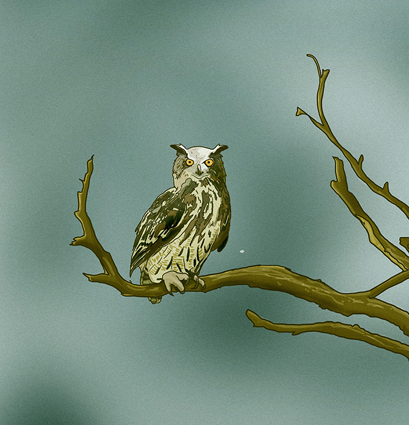
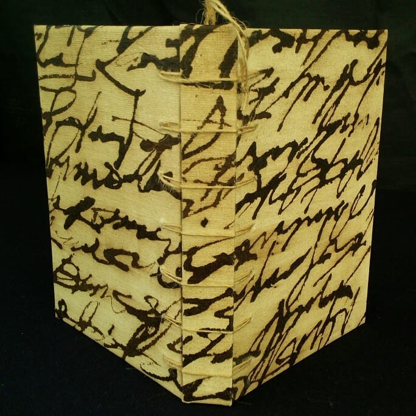
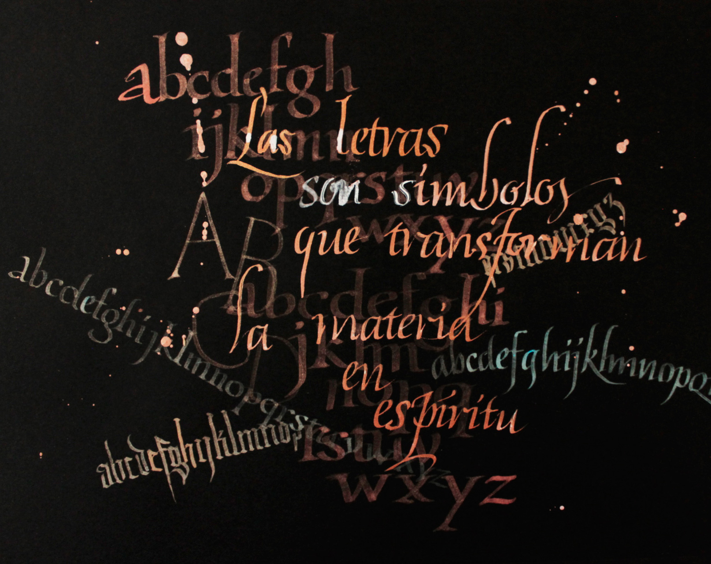
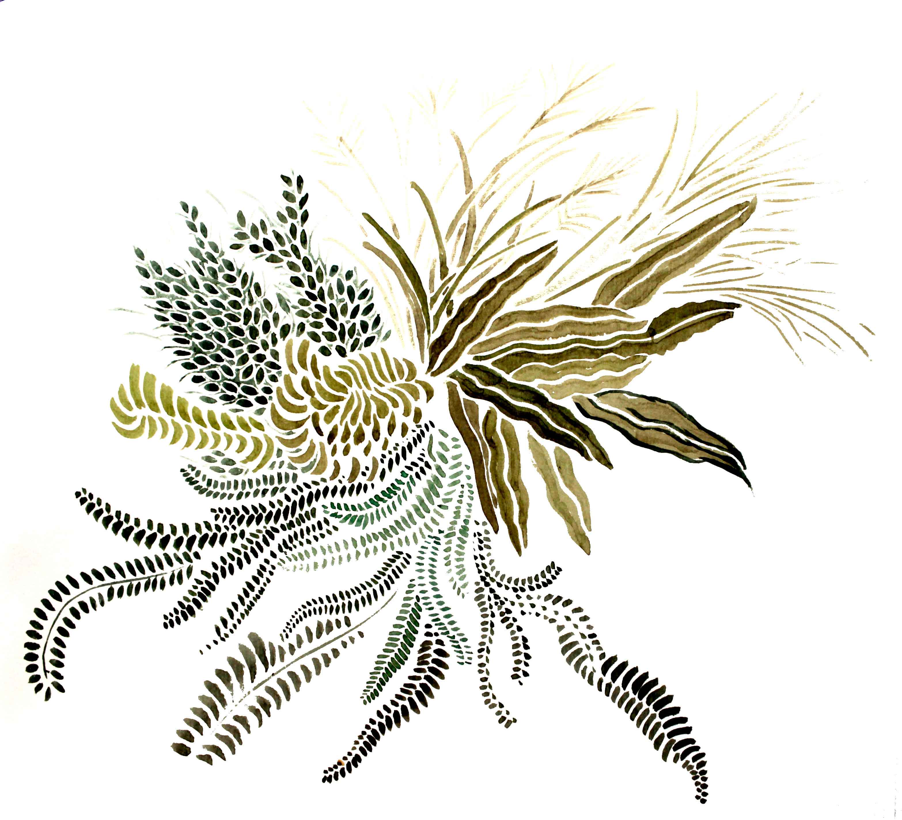

Marbled paper
Dance of pigments on water.

Coffee characters
What can a coffee stain.

Digital art
First we paint it, then we digitize it.
Pattern
Repeated one and n times.

Bookbinding
Handicraft.

Strokes & calligraphies
Gesture of ink on paper.
Paste paper
Mixed techniques.

watercolors
Water, color & paper.